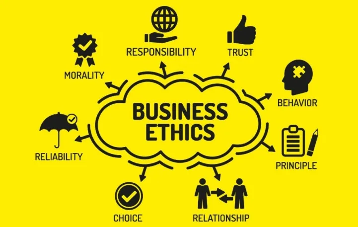
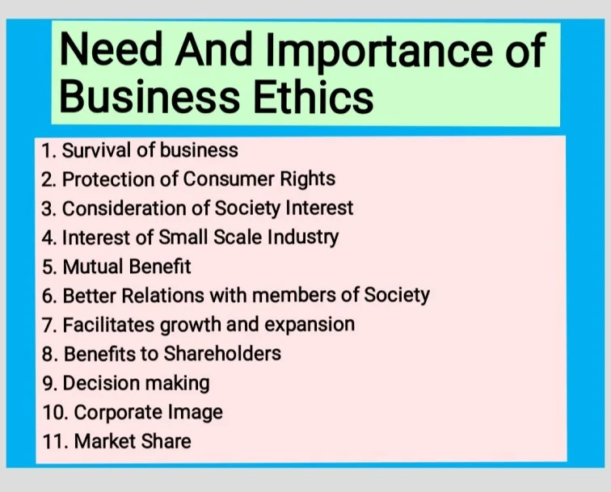

Expanded Nursing Uganda Explanation
Business Ethics should be reviewed through safe maternal and newborn assessment, early recognition of danger signs, respectful communication and timely referral. Connect the definition to vital signs, bleeding, fetal or newborn wellbeing, patient education and local protocol requirements.
01 BUSINESS ETHICS
Ethics refers to the study of right and wrong and the morality of choices individuals make.
Codes of Ethics
02 Principles of Good Business Ethics
- Honesty : One should not present false or misleading information to others. One should openly and freely share information that is appropriate to the relationship with others.
- Keeping promises : One should not make promises that cannot be kept. One should not make promises on behalf of the company unless authorized to do so.
- Respect for others : It is important to honor the contributions and abilities of others.
- Fairness and honesty : Businesspeople must obey all laws and regulations and refrain from knowingly deceiving, misrepresenting, or intimidating others.
- Organizational relationships : These include relationships with employees and customers. Customers’ and employees’ confidential information is expected to be kept secret, and all obligations must be honored.
- Conflict of interest : This is where a businessperson takes advantage of a situation for his/her own personal interest rather than the employer’s interest.
- Compassion : One should maintain an awareness of the needs of others and act to meet those needs whenever possible.
- Integrity : One will always live up to ethical principles, even when confronted by personal, professional, and social risks, as well as economic pressure.
03 Examples of Business Unethical Issues
- Corruption
- Theft
- Industrial espionage (e.g., stealing copyrights or technology using sophisticated cameras, listening devices, etc.)
- Misleading advertisements
- Sexual relations for favors
04 Benefits/Importance of Business Ethics
- Avoids expensive and embarrassing court lawsuits : Businesses that operate ethically are less likely to be involved in legal disputes, which can save them time, money, and reputation.
- Better public image : Businesses that are seen as ethical are more likely to have a positive reputation among consumers, investors, and other stakeholders. This can lead to increased sales and customer loyalty.
- Increases sales : Customers are more likely to do business with companies that they trust and perceive to be ethical.
- Brings about customer loyalty: Customers who have a positive experience with a business are more likely to become repeat customers and recommend the business to others.
- Reduces labor turnover : Employees are more likely to stay with a company that they believe is ethical and treats its employees well. This can save the company money on recruiting and training new employees.
- Increases employee morale to perform work: Employees who feel good about the company they work for are more likely to be motivated and productive.
- Increases productivity : A more ethical workplace can lead to increased productivity, as employees are more likely to be engaged and motivated.
- Increases the ability of an organization to attract and retain quality human resources : Top talent is more likely to be attracted to companies that are seen as ethical and have a good reputation.
05 Limitations of Business Ethics
- Absence of one agreed moral code (universal moral code). Morals differ in different communities: What is considered ethical in one culture may not be considered ethical in another. This can make it difficult for multinational companies to develop and implement a global code of ethics.
- Competing religious and social moral codes, especially for multinational companies operating in different parts of the world and employing people from different cultures and religions: This can make it difficult for companies to develop and implement a code of ethics that is acceptable to all employees.
- Pursuit of profits as a major objective, may lead to production of poor quality products, misleading advertisements, etc. with the aim of maximizing profits: This can damage the company’s reputation and lead to legal problems.
- Ambitions of managers and owners. For example, ambitions to own and belong to big organizations may lead to exploitation of workers and production of poor quality products with the aim of reducing production costs to make abnormal profits for fast growth: This can damage the company’s reputation and lead to legal problems.
- Modern technology creates ethical dilemmas , which never existed until quite recently. These allow unethical practices, for example, medical products (such as abortion), gene alteration of unborn babies, and selling of human bodies: This can make it difficult for companies to develop and implement a code of ethics that addresses all potential ethical issues.
- Limited resources, e.g., to pay workers well and produce environmentally friendly products: This can make it difficult for companies to operate in a completely ethical manner.
06 Negative Effects of Ethical Behavior
- Increased costs as businesses try to do what is expected , e.g., not pay bottom wages or dump pollution cheaply at sea: This can reduce the company’s profitability.
- Conflicts between profits and ethical standards : Sometimes, businesses may have to choose between doing what is profitable and doing what is ethical. This can lead to difficult decisions for managers.
- Business practices and organizational culture will have to be changed , i.e., if the organization had a culture of unethical behavior, it may have to change it to behave ethically, and change in most times comes with associated costs: This can be disruptive and expensive.
- Changes in relations with suppliers . This may mean passing the same standards down to the supply chain, and yet several suppliers may not be prepared to meet standards. Alternative suppliers may be more expensive: This can increase the company’s costs.
- Ethics and business decisions : Making ethical decisions can be complex and time-consuming. This can slow down the decision-making process and make it more difficult to compete in a fast-paced business environment.
07 Nursing Uganda Clinical Lens
Use Business Ethics as a practical nursing topic, not only a memorized definition. Translate theory into safe decisions, accountability, communication and service improvement.
- What to understand first: define business ethics, identify the normal or expected pattern, then explain what changes when the patient is unwell.
- Why it matters in care: the nurse must recognize risk early, explain findings clearly, document accurately and know when to escalate.
- How to revise it: connect each point to assessment, nursing diagnosis or care problem, intervention, rationale and evaluation.
08 Assessment Guide
- The problem, stakeholders, available resources, policy requirements and ethical issues.
- Risks to patients, staff, confidentiality, quality, costs and continuity.
- Documentation, reporting lines, supervision and evaluation measures.
09 Nursing Priorities, Rationales and Outcomes
- Use evidence, policy and professional standards to guide action.
- Communicate clearly, document decisions and protect confidentiality.
- Evaluate whether the action improves safety, learning or service delivery.
The rationale for these priorities is patient safety: nursing actions should prevent deterioration, reduce discomfort, support recovery and create clear evidence for the next caregiver.
- Expected outcome: The plan is documented, realistic, ethical and improves patient care or learning outcomes.
10 Patient Teaching and Revision Check
- Explain business ethics in simple language the patient or caregiver can repeat back.
- Teach warning signs, medicine or follow-up instructions, hygiene or lifestyle points where relevant.
- For exams, prepare a short answer using: definition, causes or risk factors, signs, assessment, management, complications and prevention.
- For ward practice, document baseline findings, actions taken, patient response and the plan for review.
Illustrations and Diagrams (2)


Related Video Lectures
Watch nursing lecture videos on YouTube for this topic. Opens in a new tab.
Watch on YouTubeExternal link: YouTube may use its own cookies and terms. Nursing Uganda is not affiliated with YouTube.